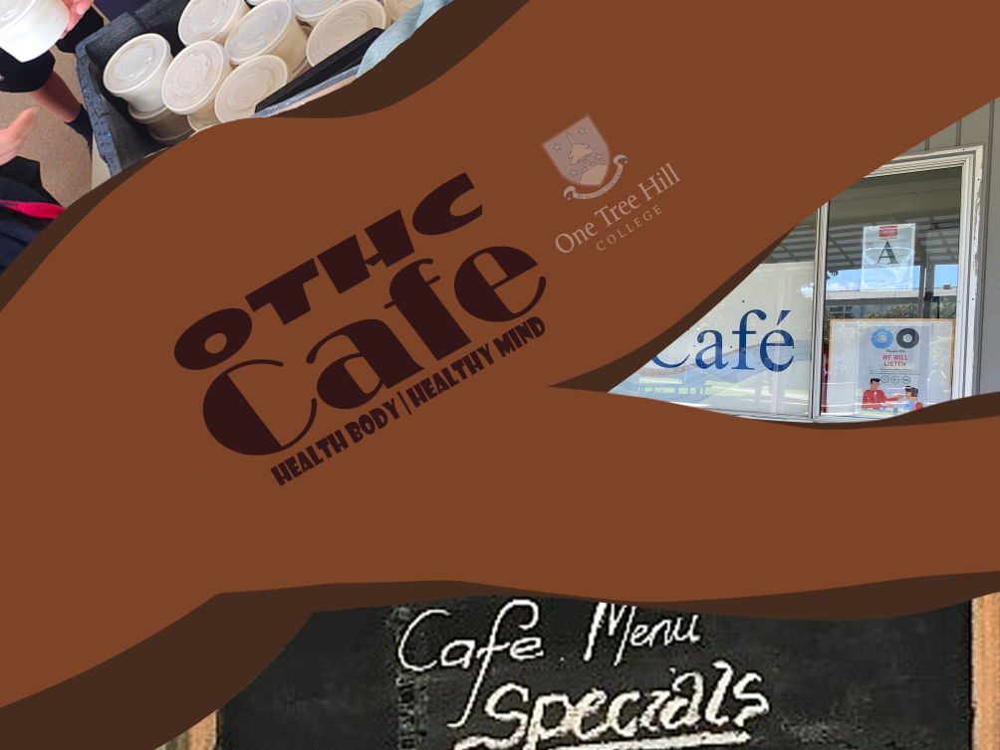
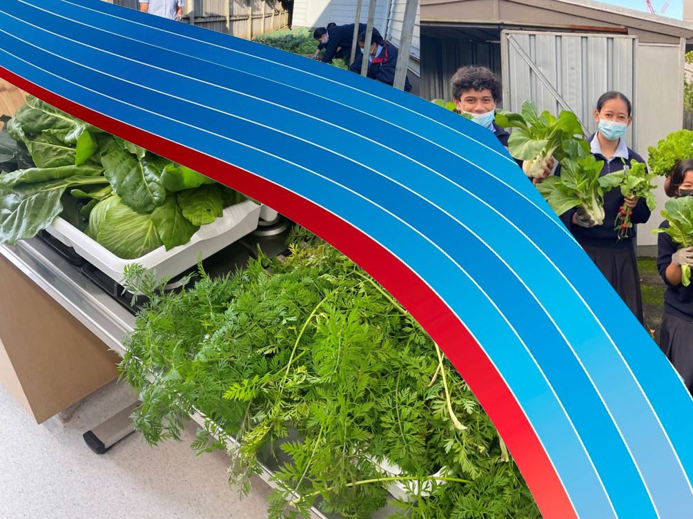

WHAT IS THE OTHC CAFE ABOUT?
The OTHC Cafe is a personal cafe of OTHC, it consists of a variety of many foods ranging from sandwiches, pies, sushi, chips and different kinds of foods. Within the cafe, there aren't that many healthy consumable items that can be found, but luckily OTHC has implemented a new working system that will provide free lunches to all the students and staff within the entire school. The foods that are being served to all the members of OTHC changes on each school day, e.g. Sandwiches on Monday, Wraps on Tuesday. The major resources that made this possible is by OTHC teaming up with various food organisations to provide the ingriedients and recipes to us in order to proceed with the system.
The consequences of maintaining an unhealthy diet can be severe towards our human bodies, we will contract various health problems that can be a threat towards our life expectancy By maintaining an unhealthy diet, you are more likely to contract various types of health conditions like obesity, heart diseases, strokes etc. Making you more vulnerable to those conditions. This is due to the lack of awareness about the healthy eating program, our community doesn't realize the importance of eating healthy and how unhealthy behaviours can increase the chances of major health problems And by using the new school system, it ensures that all students get to live a healthy lifestyle, being able to do certain school activities to an extent where fatigue isn't noticeable, making you work twice as hard as you usually work during school times.
How is Unhealthy Consumptions caused within our Community?
The main cause for this issue is due to the lack of awareness that is being spread across our entire school community, there is barely any articles, posters and even school assemblies that is being shown in our school, this further allows the students to continue on with their Unhealthy Eating diet, which is a really crucial threat towards our human bodies if we were to consume them on a day to day basis for a long term. If OTHC was to spread more awareness about the current issue towards our entire community, it brings more recognition about the unpleasant eating behaviour issue and how it can affect us on a physical and mental scale, hopefully persuading our community to change their eating habits to a healthy based diet.
What One Tree Hill is doing to help the cause
Not only is One Tree Hill College implementing the healthy school lunches system, but we are also providing much more ingriedients by using our school garden. Planting various kinds of healthy vegetables. By doing this, it ensures that our school goes by the healthy eating program, making sure that we only consume things that are very beneficial towards our human bodies and not consuming any unhealthy products. And by creating this website, it provides more awareness towards the issue and hoping that the entire OTHC Community change their unhealthy diet and convert to a much healthier solution which will allow them to perform twice as better and also be beneficial subsequently in the future.
 